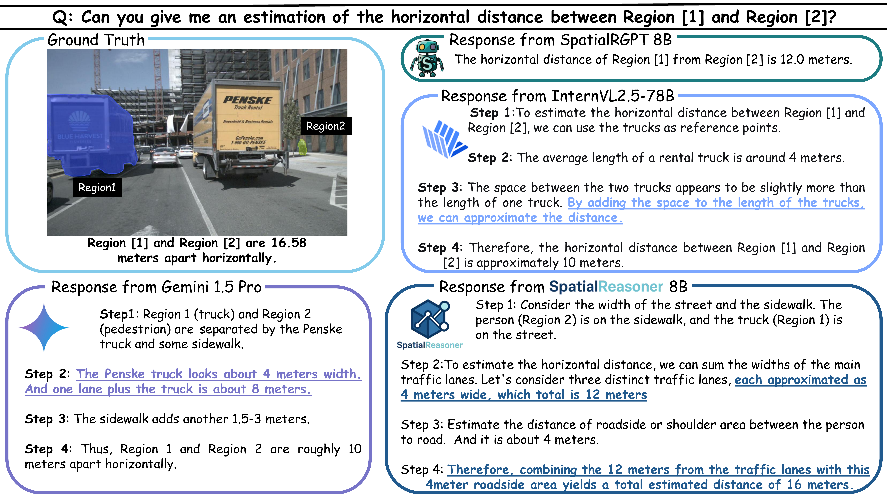
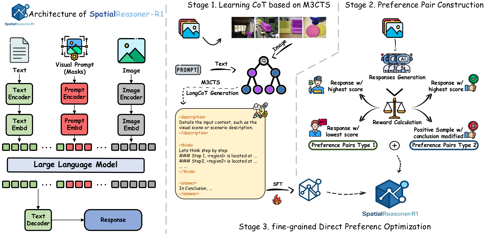
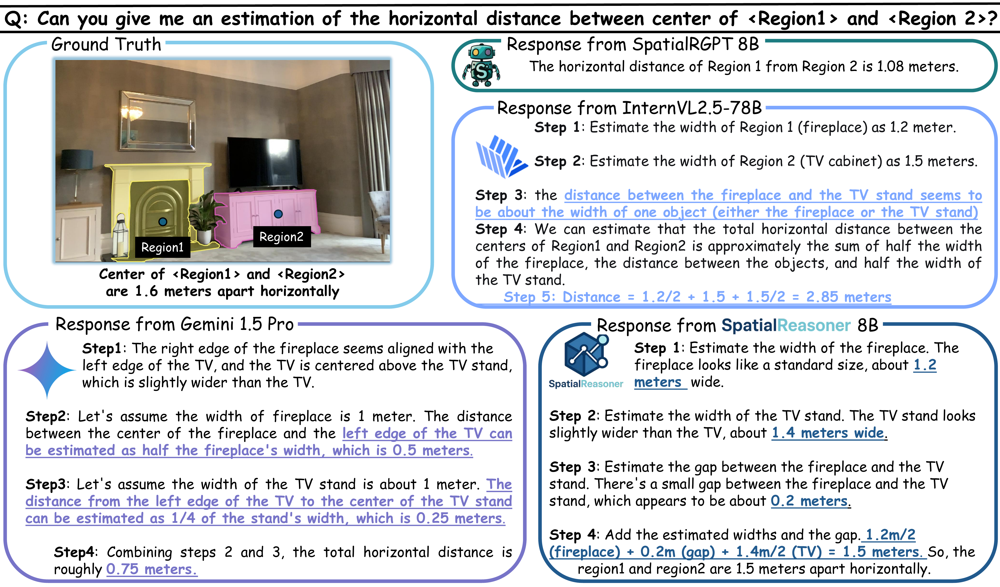

SpatialReasoner-R1Fine-Grained Preference Optimization for Spatial Reasoning in VLMs
NeurIPS 2025
TL;DR
We introduce SpatialReasoner-R1, a model for answering fine-grained spatial questions with interpretable, step-by-step reasoning. SpatialReasoner-R1 learns to connect descriptions and logical deductions to visible spatial evidence, helping models reason about object locations, relationships, and layouts.

Fine-grained preference optimization for spatial reasoning
SpatialReasoner-R1 connects descriptions and reasoning to the objects and relationships visible in the scene.
Abstract
Current Vision-Language Models (VLMs) struggle with fine-grained spatial reasoning, particularly when multi-step logic and precise spatial alignment are required. In this work, we introduce SpatialReasoner-R1 a vision-language reasoning model designed to address these limitations. To construct high-quality supervision for spatial reasoning, we design a Multi-Model Monte Carlo Tree Search (M3CTS) method that generates diverse, logically consistent Long Chain-of-Thought (LongCoT) reasoning trajectories. In addition, we propose fine-grained Direct Preference Optimization (fDPO), which introduces segment-specific preference granularity for descriptive grounding and logical reasoning, guided by a spatial reward mechanism that evaluates candidate responses based on visual consistency, spatial grounding, and logical coherence. Experimental results demonstrate that fDPO achieves an average improvement of 4.1% over standard DPO across spatial quality tasks, and a 9.0% gain in spatial quantity tasks. SpatialReasoner-R1, trained with fDPO, sets a new SoTA on SpatialRGPT-Bench, outperforming the strongest baseline by 9.4% in average accuracy, while maintaining competitive performance on general vision-language tasks.
Contributions
- SpatialReasoner-R1. We introduce SpatialReasoner-R1, a VLM designed for fine-grained LongCoT spatial reasoning that effectively generates interpretable, step-by-step explanations directly from 2D images. SpatialReasoner-R1 establishes a new SoTA in spatial understanding tasks, while maintaining robust performance on general vision-language benchmarks.
- Fine-grained Direct Preference Optimization. To enhance training stability and precision, we propose a new fine-grained Direct Preference Optimization fDPO method that employs segment-specific learning updates tailored explicitly for descriptive grounding and logical reasoning.
- Multi-Model Monte Carlo Tree Search. To address the scarcity of high-quality spatial reasoning data, we introduce a data generation pipeline that combines Multi-Model Monte Carlo Tree Search (M3CTS) with fine-grained spatial rewards, enabling the creation of diverse, logically consistent LongCoT trajectories for fine-grained preference training.
SpatialReasoner-R1 Method
SpatialReasoner-R1 takes an image, a question, and visual region prompts to generate a grounded description and multi-step spatial reasoning. Its training pipeline first constructs reasoning trajectories, then selects preference pairs, and finally optimizes the descriptive and reasoning segments separately.

-
Generate reasoning paths with M3CTS
Multi-Model Monte Carlo Tree Search explores diverse long reasoning trajectories grounded in the scene.
-
Construct fine-grained preference pairs
Candidate responses receive separate descriptive, spatial, and reasoning scores. Reward-based selection produces preferences for the relevant response segments.
-
Optimize descriptions and reasoning with fDPO
Segment-specific preference updates improve visual grounding and logical coherence instead of treating the entire response as one undifferentiated preference.
Quantitative Results
SpatialRGPT-Bench evaluates qualitative relations and quantitative measurements. The two tables report each question type separately.
Qualitative spatial relations
Accuracy on relative-position and relative-size questions in SpatialRGPT-Bench.
| Model | Below/Above | Left/Right | Big/Small | Tall/Short | Wide/Thin | Behind/Front | Qual. accuracy |
|---|---|---|---|---|---|---|---|
| Gemini 2.0 Flash | 58.33 | 68.57 | 16.98 | 50.00 | 15.38 | 53.63 | 44.29 |
| Llama 4 Maverick | 54.17 | 61.90 | 33.02 | 50.89 | 25.96 | 55.45 | 47.18 |
| Gemini 1.5 Pro | 85.83 | 56.19 | 58.49 | 71.42 | 55.76 | 60.00 | 65.14 |
| ChatGPT-4o | 87.50 | 80.00 | 53.77 | 63.39 | 51.92 | 60.90 | 66.67 |
| SpatialBot-3B | 52.50 | 62.86 | 57.54 | 49.11 | 49.04 | 62.73 | 55.56 |
| SpaceThinker Qwen2.5VL-3B | 89.16 | 63.81 | 76.41 | 56.25 | 56.73 | 70.91 | 69.25 |
| InternVL2.5-78B | 94.16 | 94.28 | 64.15 | 65.17 | 55.76 | 58.18 | 72.29 |
| Sa2va 4B | 22.50 | 25.71 | 25.47 | 16.07 | 27.88 | 30.91 | 24.65 |
| Sa2va 8B | 50.00 | 39.04 | 45.28 | 26.78 | 45.19 | 53.63 | 43.37 |
| SpatialRGPT-8B | 99.17 | 100.00 | 84.90 | 89.28 | 91.34 | 90.90 | 92.69 |
| SpatialReasoner-R1 SFT 4B | 79.16 | 78.09 | 55.66 | 66.96 | 59.61 | 75.45 | 69.41 |
| SpatialReasoner-R1 SFT 8B | 81.66 | 81.90 | 75.47 | 75.89 | 79.80 | 83.63 | 79.75 |
| SpatialReasoner-R1 DPO 4B | 91.66 | 91.42 | 69.81 | 65.17 | 71.15 | 85.45 | 79.29 |
| SpatialReasoner-R1 DPO 8B | 94.16 | 93.33 | 89.62 | 90.18 | 88.64 | 92.27 | 91.48 |
| SpatialReasoner-R1 fDPO 4B | 95.83 | 93.33 | 83.96 | 74.10 | 87.50 | 89.09 | 87.37 |
| SpatialReasoner-R1 fDPO 8B | 98.33 | 98.10 | 95.28 | 96.43 | 91.34 | 93.64 | 95.59 |
Quantitative spatial measurements
Accuracy on distance, width, height, and direction questions in SpatialRGPT-Bench.
| Model | Direct distance | Horizontal distance | Vertical distance | Width | Height | Direction | Quant. accuracy |
|---|---|---|---|---|---|---|---|
| Gemini 2.0 Flash | 9.45 | 10.65 | 26.41 | 10.52 | 30.82 | 54.20 | 22.43 |
| Llama 4 Maverick | 24.48 | 28.68 | 34.28 | 35.71 | 44.61 | 58.09 | 36.72 |
| Gemini 1.5 Pro | 14.18 | 17.21 | 14.15 | 19.54 | 36.09 | 30.84 | 21.90 |
| ChatGPT-4o | — | — | — | — | — | 60.75 | — |
| SpatialBot-3B | 6.00 | 15.51 | 8.00 | 10.52 | 18.75 | 39.00 | 15.62 |
| SpaceThinker Qwen2.5VL-3B | 24.32 | 17.21 | 59.43 | 23.27 | 23.62 | 32.35 | 28.97 |
| InternVL2.5-78B | 27.70 | 22.13 | 41.50 | 29.32 | 34.58 | 62.61 | 35.25 |
| Sa2va 4B | 13.51 | 15.57 | 19.81 | 13.53 | 12.03 | 10.28 | 14.02 |
| Sa2va 8B | 14.18 | 14.75 | 9.43 | 14.28 | 19.54 | 14.18 | 14.55 |
| SpatialRGPT-8B | 45.90 | 68.00 | 56.60 | 48.90 | 61.70 | 95.30 | 61.42 |
| SpatialReasoner-R1 SFT 4B | 22.29 | 27.86 | 31.13 | 25.56 | 33.80 | 47.66 | 30.71 |
| SpatialReasoner-R1 SFT 8B | 28.43 | 20.49 | 44.05 | 33.59 | 51.63 | 46.72 | 37.12 |
| SpatialReasoner-R1 DPO 4B | 47.97 | 46.72 | 60.37 | 45.11 | 55.63 | 91.58 | 56.61 |
| SpatialReasoner-R1 DPO 8B | 62.83 | 56.55 | 60.37 | 70.45 | 68.42 | 93.45 | 68.22 |
| SpatialReasoner-R1 fDPO 4B | 60.13 | 59.01 | 71.70 | 65.41 | 57.89 | 92.52 | 66.76 |
| SpatialReasoner-R1 fDPO 8B | 70.95 | 72.13 | 74.52 | 80.45 | 74.43 | 94.39 | 77.30 |
Qualitative Results


BibTeX
@inproceedings{shen2025finegrainedpreferenceoptimizationimproves,
title={Fine-Grained Preference Optimization Improves Spatial Reasoning in VLMs},
author={Shen, Yifan and Liu, Yuanzhe and Zhu, Jingyuan and Cao, Xu and Zhang, Xiaofeng and He, Yixiao and Ye, Wenming and Rehg, James Matthew and Lourentzou, Ismini},
booktitle={Advances in Neural Information Processing Systems (NeurIPS)},
year={2025}
}Template acknowledgements
This site is built upon the work of Nerfies, made available under the Creative Commons Attribution-ShareAlike 4.0 International License.